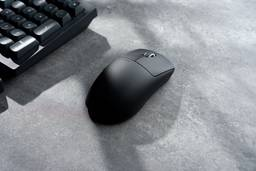
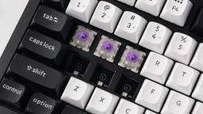
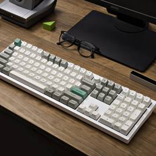
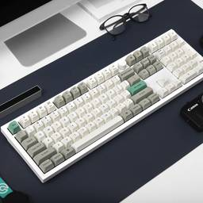
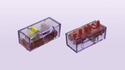
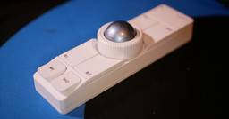
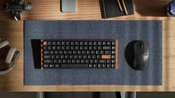

Keychron - News
https://www.keychron.com/blogs/news
Everything about Keychron is here.
フィード

What Is a Mouse Actuation Point?
Keychron - News
<p>Learn what a mouse actuation point is, how it differs from total click travel, and how to read actuation numbers on a mouse spec sheet, using the Keychron G6 HE as an example.</p><p><a class="read-more" href="https://www.keychron.com/blogs/news/blogs-news-mouse-actuation-point">More</a></p>
1日前
How to Set Up Your First Hall Effect Mouse
Keychron - News
<p>Moving from a mechanical mouse to a hall effect one takes a browser tab and one setting. Set DPI, polling rate, actuation point and Rapid Trigger in the right order, and give your grip a few days before changing it.</p><p><a class="read-more" href="https://www.keychron.com/blogs/news/how-to-set-up-your-first-hall-effect-mouse">More</a></p>
1日前

Magnetic Keyboards Explained: Switches, Sensors, Why They Are Faster
Keychron - News
<p>How a magnetic keyboard switch reads each key, why adjustable actuation and Rapid Trigger make it faster, and how to choose your actuation point.</p><p><a class="read-more" href="https://www.keychron.com/blogs/news/magnetic-keyboard-explained">More</a></p>
2日前

Keychron Q6 Max Review Guide: Who This Full-Size Keyboard Is For
Keychron - News
<p>Who the Keychron Q6 Max suits, what its layout, connection, type, color and Gateron Jupiter switches change at your desk, with US list prices.</p><p><a class="read-more" href="https://www.keychron.com/blogs/news/keychron-q6-max-review-guide">More</a></p>
2日前

Full Size Mechanical Keyboard Guide 2026: Which Keychron to Buy
Keychron - News
<p>Pick a Keychron full size mechanical keyboard by how you work: a first board at home, slim keys for long typing, a heavy office board, or work and games.</p><p><a class="read-more" href="https://www.keychron.com/blogs/news/keychron-full-size-mechanical-keyboard">More</a></p>
2日前

Hall Effect Mouse Explained: How a Magnetic Switch Clicks
Keychron - News
<p>What a hall effect mouse is, how a magnetic switch clicks compared with a micro switch, and what adjustable actuation and Rapid Trigger change.</p><p><a class="read-more" href="https://www.keychron.com/blogs/news/hall-effect-mouse-explained">More</a></p>
3日前
Best Keychron Keyboard 2026: 7 Picks From Our Best Sellers
Keychron - News
<p>Seven Keychron keyboards, one per desk: office, work and play, gaming, coding, Mac, ergonomic and budget. Picked from the boards people buy most.</p><p><a class="read-more" href="https://www.keychron.com/blogs/news/best-keychron-keyboard">More</a></p>
3日前

Nape Pro for Rhythm Games: beatoraja Scratch & In Falsus
Keychron - News
<p>Learn how to set up the Nape Pro as a BMS mouse scratch controller for beatoraja, plus practical keyboard and mouse tips for rhythm games.</p><p><a class="read-more" href="https://www.keychron.com/blogs/news/nape-pro-is-a-device-for-playing-rhythm-games">More</a></p>
3日前

Keychron M6 Buying Guide: Wheel, Sensor, 8K, and Switch, Explained
Keychron - News
<p>Stuck on the Keychron M6 options? What the wheel, sensor, polling rate, and switch choices change, with list prices, so you can pick in one read.</p><p><a class="read-more" href="https://www.keychron.com/blogs/news/keychron-m6-review-guide">More</a></p>
4日前

How to Set Neutral on Launcher
Keychron - News
Neutral lets you select two keys. When both keys are pressed simultaneously, neither key is activated. This helps prevent key conflicts for smoother and more precise gaming and continuous input.Certain games, such as CS: GO and Apex Legends, have explicit rules prohibiting the use of SOCD (A range of key conflict resolution solutions, including Absolute Priority）. Players should exercise caution when enabling this function in these games and ensure compliance with the game service terms.Below is a step-by-step guide on how to set up Absolute Priority:Use the latest version of Chrome/Opera/Edge browser to click here to open the launcher.After establishing a physical connection using our dedicated connecting cable or 2.4 GHz receiver, click the 'Connect' button on the Launcher and select the device you need to configure to connect to it. Your browser does not support the video tag. Notice: Some product models only support a wired connection.Click "HE Mode" from the function bar on the le
8日前
Keychron Q6 Max vs Q6 Ultra vs Q6 HE: which full-size board is for you
Keychron - News
<p>Q6 Max, Q6 Ultra, or Q6 HE? Same case, three different technologies. Which one to buy based on how you use a keyboard.</p><p><a class="read-more" href="https://www.keychron.com/blogs/news/q6-max-vs-q6-ultra-vs-q6-he">More</a></p>
23日前
Is a hall-effect keyboard worth it if you mostly type? K10 HE and K2 HE without the hype
Keychron - News
<p>K10 HE or K2 HE in your cart? What magnetic switches change for typing, the trade-offs, and who should skip HE entirely.</p><p><a class="read-more" href="https://www.keychron.com/blogs/news/hall-effect-keyboard-for-typing-k10-he-k2-he">More</a></p>
23日前
Will these switches or keycaps fit my Keychron? The compatibility check before you buy
Keychron - News
<p>Check switch type, keycap profile, and layout before you buy switches or keycaps for your Keychron. A short test, a compatibility table, and picks by board type.</p><p><a class="read-more" href="https://www.keychron.com/blogs/news/switch-keycap-compatibility-check">More</a></p>
23日前
How to Customize the G6 HE in Keychron Launcher
Keychron - News
<div><i>Set up the G6 HE in Keychron Launcher: HE Mode, actuation point, Rapid Trigger — and how a browser-based configurator compares with desktop software.</i></div><p><a class="read-more" href="https://www.keychron.com/blogs/news/how-to-customize-the-g6-he-in-keychron-launcher">More</a></p>
1ヶ月前
How to Set Absolute Priority on Launcher
Keychron - News
Absolute Priority lets you select two keys and assign higher priority to one. Regardless of the trigger order, when both keys are pressed or triggered at the same time, only the higher-priority key is activated. This helps prevent key conflicts for smoother, more precise gaming and more consistent input. Certain games, such as CS:GO and Apex Legends, have explicit rules prohibiting the use of SOCD (a category of key conflict resolution methods, including Absolute Priority). Players should exercise caution when enabling this function in these games and ensure compliance with the game’s terms of service.Below is a step-by-step guide on how to set up Absolute Priority:Use the latest version of Chrome, Opera, or Edge, then click here to open the launcher. Establish a physical connection using the included cable or a 2.4 GHz receiver. Then click the "Connect" button in the Launcher and select the device you want to configure. Notice: Some product models only support a wired connection. Clic
1ヶ月前
Optical vs Magnetic Mouse Switch: Click Feel, Latency and Haptics
Keychron - News
<p>Optical vs magnetic mouse switch explained: how each reads a click, Hall effect vs TMR vs inductive, haptic vs leaf spring feel, debounce and lifespan.</p><p><a class="read-more" href="https://www.keychron.com/blogs/news/optical-vs-magoptic-switches-which-gaming-mouse-should-you-pick">More</a></p>
1ヶ月前
Does 8K Polling Rate Drain Mouse Battery Faster?
Keychron - News
Yes. In general, running a wireless mouse at 8K (8000 Hz) uses more power than running it at a lower polling rate.An 8K polling rate allows a mouse to report data to your PC more frequently, which can improve responsiveness in situations where fast, consistent input matters. But making the mouse communicate more often also requires more power.This isn't a flaw. It is simply a tradeoff between performance and battery life.What Is Mouse Polling Rate?Polling rate describes how often a mouse can report data to your computer.The relationship is straightforward:Polling RateMaximum Report FrequencyTheoretical Polling Interval1000 HzUp to 1,000 reports/s1 ms2000 HzUp to 2,000 reports/s0.5 ms4000 HzUp to 4,000 reports/s0.25 ms8000 HzUp to 8,000 reports/s0.125 ms*The polling interval is simply the theoretical amount of time between reports. It is not the total latency of the mouse, since sensor processing, wireless transmission, the computer, the game, and other parts of the input chain can also
2ヶ月前
Keychron Gear Video Review: Keyboards & Mice - August 2026
Keychron - News
Hybrid + TMR + 8k | Keychron V6 Ultra Hybrid Magnetic Mechanical Keyboard Review - By BiboyHaranero“Again, this is a hybrid keyboard, so you can apply mechanical switches and magnetic switches together.” Keychron V6 Ultra HE 8K 🔥 Mechanical + Magnetic Switches! - By Click and Thock"Featuring an 8K polling rate, excellent typing feel, and support for both switch technologies." Are Low Profile Keyboards Worth it? | Keychron K3 HE - By Hamaji Neo"If there was a middle ground between a MacBook keyboard and a mechanical keyboard, I feel like this would be it." I Was Wrong About Split Keyboards | Keychron Q11 Ultra 8K - By Stream Gear Talk"The ability to make the keyboard adapt to you instead of you adapting to the keyboard." I Played osu!mania and FNF on a ENTIRELY WOODEN KEYBOARD... - By SillyFangirl osu"The Keychron K2 HE All-Wood Special Edition is made of real wood. The entire body. And it still goes hard for rhythm games.🪵" Keychron M6 Long-term Review - By The Tech Pond"The things t...
2ヶ月前
Keychron Gear Article Review: Keyboards & Mice - August 2026
Keychron - News
The 5 Best Wireless Keyboards of 2026 - By Gregory Vodden, @RTINGS.com"The best all-around wireless keyboard we recommend for most people is the Keychron Q6 Ultra 8K."Keychron K8 Ultra 8K review - By Reece Bithrey, @PC Gamer"Solid, dependable and versatile."The Keychron K2 Ultra 8K is a dense, heavy keyboard in more ways than one - By Tabitha Baker, @GamesRadar+"The Keychron K2 Ultra 8K is going to be perfect for the heavy handed among us."Keychron M6 4K Wireless Mouse Review - By Kizito Katawonga, @PowerUp"Great for both working and gaming."Keychron Nape Pro Trackball – A Companion, Not a Replacement - By Ben Harnwell, @DezDoes"The longer I used the Keychron Nape Pro, the less I noticed the device itself and the more I noticed the convenience it brought to my workflow."The Nape Pro Is Not Like Other Trackballs - By Chris Person, @Aftermath"What the Nape Pro excels in is defining its own use case."
2ヶ月前
Keychron Gear Video Review: Keyboards & Mice - July 2026
Keychron - News
Gateron Type-R switch review (KeychronQ6 Ultra 8K) - By Chyrosran22"Today we do another two-fer; the anticipated Gateron Type-R switches, tested in a Keychron chassis, the Q6 Ultra 8K." Thunderbolt 5 Docks For Mac Explained: Don't Waste Your Money! - By Kyle Erickson"Everything you should know about finding the right Thunderbolt 5 dock for your Mac!" Keychron K8 Ultra 8K Sound Test & Review | Apex Red Switches - By Click and Thock"This version comes equipped with Keychron Apex Red switches, delivering a smooth and fast typing experience." Keychron K2 Ultra 8K Review | Premium Gaming Keyboard That Gets Almost Everything Right - By LevelUP Gaming & Tech" The Keychron K2 Ultra 8K is one of the most exciting mechanical keyboards released this year." The Japanese Keyboard Layout Everyone Forgot About - By まだまだJared"From QWERTY romaji to direct kana input, JIS keyboards, and flick typing on phones — I looked into how people in Japan really type, what they actually prefer, and the history beh
3ヶ月前
How to Set Keyboard Bounce Time on Launcher
Keychron - News
Bounce Time refers to the interval after a key click during which the keyboard ignores subsequent clicks. Designed to counter physical key bounce, it prevent misidentifying a single press as multiple inputs, avoiding repeated typing and abnormal command triggering.Keyboard Bounce Time Settings allows you to set Debounce Mode and Response seconds by yourself. It should be noted that, due to the difference in physical structure, magnetic shafts do not exhibit mechanical vibration like mechanical shafts and do not require debunce. Below is the tutorial for setting the keyboard debounce time: 1.Use the latest version of Chrome/Opera/Edge browser to click here to open the launcher. 2.After establishing a physical connection using our dedicated connecting cable or 2.4 GHz receiver, click the 'Connect' button on the Launcher and select the device you need to configure to connect to it.Notice:Some product models only support a wired connection. 3.Click "Advance Mode" from the function bar on t
3ヶ月前
Keychron Gear Video Review: Keyboards & Mice - June 2026
Keychron - News
Three Keychron Ultras, One Brain: Q6, Q3, V3 Review - By Scooped Bar"In this review: why ZMK is the future of wireless mech keyboards (and why QMK couldn't get there), how Keychron Launcher fixes the one thing that's always held ZMK back." Playing FNF with a WOODEN KEYBOARD... (Keychron K2 HE) - By SillyFangirl osu"The Keychron K2 HE has real wood on it. Like actual rosewood on the frame. And somehow it also goes crazy hard for rhythm games. 🪵" Unboxing Keychron Q11 and Q0 keyboards! (split ergo & one-button) - By Chyrosran22"Today we do a double unboxing; something serious, and something silly." Can This Elegant Raspberry Pi 5 Setup Replace a Desktop PC? - By Volos Projects"The setup includes a 2K AMOLED monitor, a wireless K9 Max keyboard and mouse, Bluetooth audio, and battery power for a clean and minimalist desk experience." Keychron Q1 HE 8K - Hall Effect, 8K Polling, and Full Customization - By sneGGames"I'll show you the keyboard's appearance, build quality, package contents, ...
4ヶ月前
Keychron Gear Video Review: Keyboards & Mice - May 2026
Keychron - News
Keychron Q3 Ultra 8K: Enthusiast Meets Gaming - By KitGuruTech"The Keychron Q3 Ultra 8K is a premium tenkeyless mechanical keyboard that blends enthusiast-level build quality with modern connectivity and performance features." I Used an 8000Hz Keyboard to Break Funky Friday (Keychron Q1 HE 8K Review) - By SillyFangirl osu"A heavy, fully CNC-machined aluminum chassis that stays perfectly planted during intense matches." Keychron Just Crushed Everyone Else - By Caffrey"We'll dive into what truly makes a gaming mouse good, separating essential features from pure marketing, ensuring you pick the best mouse for gaming." Keychron Q16HE review (Ultra-fast magnetic lime TMR) - By Chyrosran22"Today we look at a fully ceramic keyboard, no less! Quite an interesting drop." Concrete Keyboard?! Keychron K2 HE Concrete Edition Sound Test & Review - By Click and Thock"For the first time, here’s a keyboard made of concrete!" I Didn’t Expect This From Keychron - By Too Good Tech"Whether you're a typist
5ヶ月前
Keychron Keyboards Article Review - May 2026
Keychron - News
The best mechanical keyboards in 2026: We reviewed 100+ models to find the best 'thock' - By Darragh Murphy Contributions from Nikita Achanta, Peter Wolinski, Ashley Thieme, @Tom's Guide"As mechanical keyboards go, the Keychron V1 Ultra 8K is one of the best out there." I used Keychron’s new split mechanical keyboard for a week and its tether-free design is a complete game changer - By Anthony Spadafora, @Tom's Guide"All the ergonomic comfort of a split layout, with the freedom of being truly wire-free." 'One of the only budget mechanical keyboards I’d buy': here’s how the Keychron V1 8K sets a new gold standard for cheap decks - By Nikita Achanta, @Tom's Guide"Offering a lovely typing experience and sound profile, as well as great build quality, the V1 8K doesn’t give you much to complain about." I just tested the foldable Keychron B11 Pro Ultra-Slim keyboard — it’s good for typing but it might leave you feeling shortchanged - By Nikita Achanta, @Tom's Guide"This is a fantastic deck f
5ヶ月前
How to Use the Angle Adjustment on Launcher
Keychron - News
Angle Adjustment lets you rotate the mouse sensor axis up to 90° forward or backward, keeping cursor movement perfectly horizontal even with angled mouse movement. Below is a step-by-step guide on how to use the Angle Adjustment: 1. Use the latest version of Chrome/Opera/Edge browser to click here to open the launcher. 2. Connect your device via our dedicated cable or 2.4G receiver. Click the "Connect" button in the Launcher and select your device from the list.Notice: Some product models only support a wired connection. 3. Click "Angle Adjustment" from the function bar on the left side. 4. You can adjust the angle of the mouse sensor in various ways via the Angle Dashboard.Three Ways to Adjust the Mouse Angle:Interactive Slider: Drag for quick, wide-range adjustments.Quick Adjustment: Tap the angle buttons located next to the dashboard to quickly set the device to preset angles.Manual Input: Click the value to type a specific number directly. Note: Values outside the hardware's suppor
5ヶ月前
How to Set Mouse DPI and Polling Rate on Launcher
Keychron - News
Keychron mice support customizable DPI levels and selectable Polling Rate tailored to your preferences. Available settings may vary by model. Getting Started Below is a step-by-step guide on how to set up Mouse DPI and Polling Rate : 1.Use the latest version of Chrome/Opera/Edge browser to click here to open the launcher. 2.After establishing a physical connection using our dedicated connecting cable or 2.4G receiver, click the 'Connect' button on the Launcher and select the device you need to configure to connect to it.Notice: Some product models only support a wired connection. 3.Click "DPI Settings" ＆ "Polling Rate" from the function bar on the left side. Customizing DPI (Sensitivity)You can set up to 5 DPI levels. The supported DPI range varies by mouse model. For example, the M6 8K in the demo diagram supports a DPI range of 100 to 30000 for each level.Switching Levels:Users can set the DPI value for each level in Launcher, and then switch between these levels either via Launcher
5ヶ月前
How to Create a Mouse Macro on Launcher
Keychron - News
A macro is a pre-configured shortcut that executes a sequence of commands with a single keystroke. Instead of repeating complex inputs, you can now program one key to handle the entire process for you. For example, a complex shortcut like ‘Ctrl + C’ ＆ ‘Ctrl + V’ (Windows Copy and Paste) can be mapped to a single key press. Below is a step-by-step guide on how to update the mouse firmware: 1. Use the latest version of Chrome/Opera/Edge browser to click here to open the launcher. 2. Connect your device via our dedicated cable or 2.4G receiver. Click the "Connect" button in the Launcher and select your device from the list.Notice: Some product models only support a wired connection. 3. Click "Macro" in the left function bar, then click the "+" icon to create a new macro entry. 4. Select the macro entry you just created. You can now customize its settings: give it a name, decide whether to include time intervals (delays) between actions, and choose if the macro should loop.Once you have fi
5ヶ月前
Mouse Firmware Update Tutorial
Keychron - News
Keychron regularly releases new firmware updates for our mice. Each update introduces new features or resolves known issues. Below is a step-by-step guide on how to update the mouse firmware: 1. Use the latest version of Chrome/Opera/Edge browser to click here to open the launcher. 2. Connect your device via the dedicated cable or 2.4G receiver, then click the 'Connect' button on the Launcher to select your device.Notice: If you need to update the device firmware, you must use a wired connection. 3. Click "Firmware Update" from the function bar on the left side. This page will display your current firmware version, the latest available version, and some release notes for the latest firmware. 4. Click "Next". 5. Click "Flash Firmware". 6. A progress bar will appear once the update begins. Please wait for the process to complete.Note: Do not disconnect the cable during the update to prevent any device malfunctions. 7. Once the update is complete, a "Succeed" prompt will appear.
5ヶ月前
How to Set Mouse Customize Buttons on Launcher
Keychron - News
Keychron allows users to customize mouse buttons to fit their usage habits. A wide range of functions is available to choose from. Below is a step-by-step guide on how to set up Mouse Customize Buttons: 1. Use the latest version of Chrome/Opera/Edge browser to click here to open the launcher. 2. After establishing a physical connection using our dedicated connecting cable or 2.4G receiver, click the 'Connect' button on the Launcher and select the device you need to configure to connect to it.Notice: Some product models only support a wired connection. 3. Click the "Customize" button on the left, then select the button you wish to configure on the virtual mouse. Once the button highlights, it indicates it has been selected. You can then click your target function in the section below to complete the remapping. A. Basic Buttons: Common daily operations such as left-click, right-click, middle-click, scroll up, scroll down, forward/backward, and left double-click. B. Shortcut Keys: Common
5ヶ月前